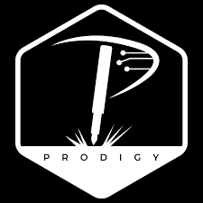
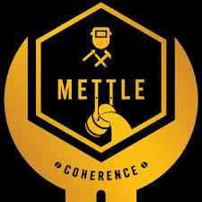

The Computer Science and Engineering Association hosts an annual
national level technical symposium Vortex.
Probe
Probe-the national level annual technical symposium of Electronics
and Communication Department of NIT Trichy, presented by the ECE
Association, covers a variety of events from coding to hardware,
technical to general.
Currents
CURRENTS is the annual technical symposium of the Department of
Electrical and Electronics Engineering of NIT Tiruchirappalli
Sensors
SENSORS, the national level technical symposium of the
Instrumentation and Control Engineering department of NIT Trichy,
is undoubtedly the jewel in the crown of the department
Synergy
SYNERGY, is the technical symposium of the Mechanical Engineering
Department of NITT.
Moments
MOMENTS,the symposium of Civil Engineering Department of NITT
offers a multitude of events for an appropriate expression of
technical expertise and general proficiency.
Alchemy
ALCHEMY, is the technical symposium of the Chemical Engineering
Department of NITT.

Prodigy
PRODIGY, is the technical symposium of the Production Engineering
Department of NITT.

Mettle
The students of Metallurgical and Materials Engineering Department
of this esteemed institution formed a student association and
organized a national level technical symposium "METTLE".